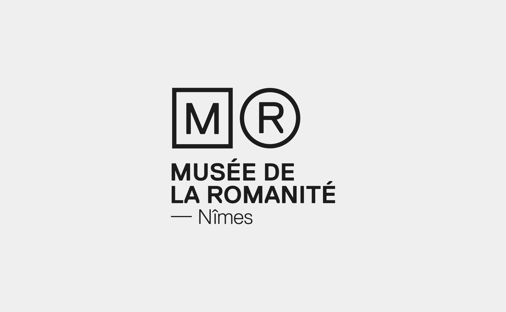

Le but de ce site est d'abord d'encourager l'utilisateur à éteindre son écran pour aller jouer en extérieur. Pour ce faire, notre plateforme se présente sous la forme d'un site tunnel dans lequel, passé un certain stade, l'utilisateur ne peut plus revenir en arrière et se trouve face à une page ne lui proposant aucune interaction, ne lui laissant aucun autre choix que de quitter le site.Également, l'utilisateur ne peut jouer et s'entraîner que 3 fois maximum à chaque jeu, ce qui crée une véritable frustration chez lui et le pousse à y rejouer... hors écran cette fois. La corrélation des faits que l'utilisateur n'ait pu jouer que 3 fois en ligne et qu'il puisse se retrouver dans une impasse si le jeu lui plaît, le pousseront à jouer en dehors des écrans.
Voici la proposition de graphéine :
En m'appuyant sur leur proposition, j'ai réalisé une vidéo permettant de montrer comment cette identité visuelle aurait pu s'animer.
Il s'agit ici de la promotion d'exposition.
Cette vidéo a été décliné en format vertical et carré pour pouvoir être diffusés sur les réseaux sociaux.